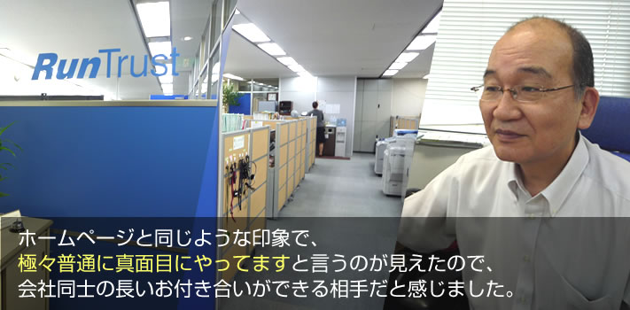
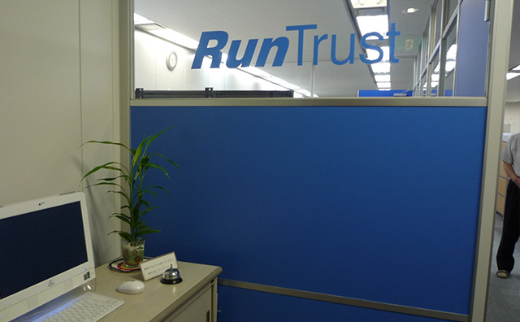
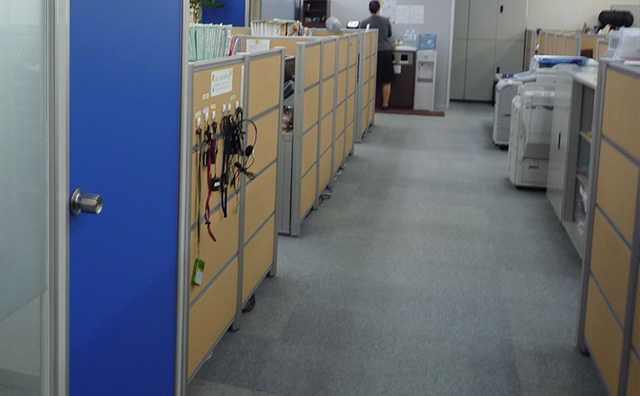

ソフトウェア開発を行うラン・トラスト様からお客様の声を頂きました
東京都中野区に拠点を構えるソフトウェア開発会社ラン・トラスト様にお話をお伺いいたしました。以前に依頼をしていた業者にご不満があって当社にご依頼を頂きました。

- 株式会社ラン・トラスト
- 代表取締役会長 田嶋 延剛様
東京都中野区中野５－６８－２ 山忠中野ビル７階
０３－５３１８－３８３１
※カーペットクリーニングを平成１９年から年に２回定期的に作業。
※インフラを支えるソフトウェア企業
会社同志の長い付き合いのできる相手。
- ― カーペットクリーニングはご存じでしたか。
- ここのビルに十年くらい前に入ったんですが、その後にオフィスクリーニング専門の大手の会社がキャンペーンで毎日掃除にきて、年に2回クリーニングをやりますというのがあって、それを２年くらいやっていて、その時急激に景気が落ちたんですよ。IT不況ってやつかな(笑)その時1番最初に削減できるので、１回止めちゃったんですよ。
- ― ㈱タックをどこでお知りになりましたか。
- カーペットクリーニングをネットを調べたら、金額もきちんと出ていたし、あと、ホームページが うちは真面目にやってますと言う雰囲気だったので、連絡しました。
- ― カーペットクリーニングにどこまで期待していましたか。
- 以前もやったことがあったので、この程度だろうという想像はついていました。
- ― 他社にも問い合わせはしましたか。
- 以前依頼していた業者さんに連絡したら、料金が倍になると言うんだよね。なんでだと聞いたら、違う会社に吸収されたとかで、それくらい払ってもらわないとと上から目線できたんでね。なんだそれ違うなと。
- ― 他社と比べていかがでしたか。
- ホームページに金額があまり出てないんだよね。タックさんのには金額が出ていて、このくらいならと思った。
- ― ㈱タックに決めた理由はなんですか。
- 金額もきちんと出ていたし、ホームページがね、うちは真面目にやってますと言う雰囲気の ホームページだったので、来て頂いたんです。そしたら、ホームページと同じような印象で、極々普通に真面目にやってますと言うのが見えたので、会社同士の長いお付き合いができる相手だと感じて。

- ― カーペットのクリーニングをやって良かったですか。
- お陰様で汚れが気にならず、気持ちよく仕事ができてます。
- ― ㈱タックに依頼して良かったと思うことを教えてください。
- 他社とは比べようがないが、会社としての対応はきちんとしているし、作業員の教育もしっかりしているのがよくわかる。負の部分が無いことが素晴らしいことだよね。
- ― ㈱タックへの要望を教えてください。
- 今まで通りきちんとした作業をしてもらえればいいんです。できればサービス内容を広げて、いろいろ協力してもらえるとありがたいが、手を広げすぎて作業の質が落ちるのは困るけどね

田嶋様ご協力ありがとうございました。営業品目につきましては、椅子、カーペット
以外にもエアコンクリーニング・ブラインドクリーニング等いろいろありますのでご相談ください。